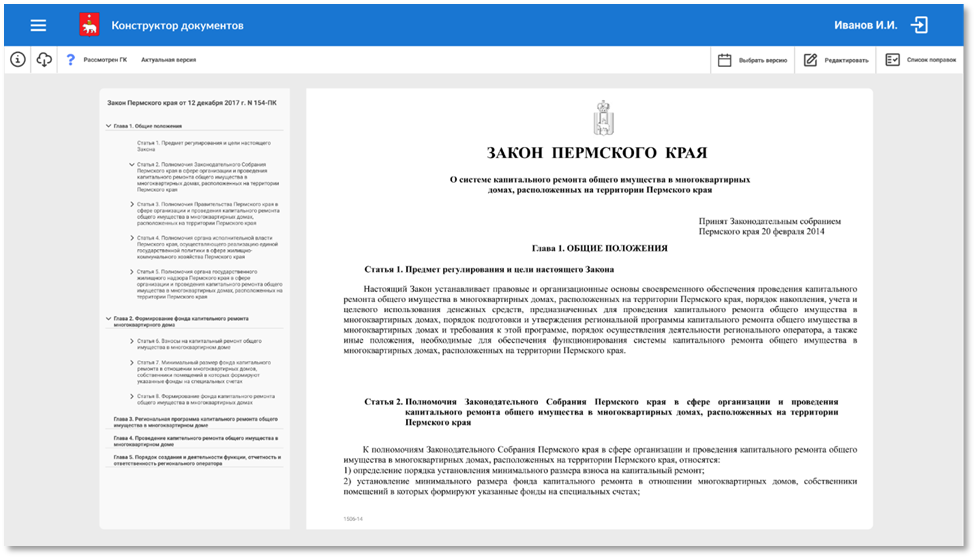
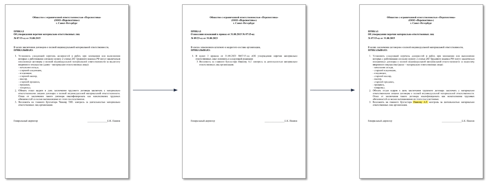

Конструктор документов
Информационная система хранения
и генерации актуальных редакций документов
с использованием технологий
искусственного интеллекта
Сложности при поддержании базы актуальных редакций документов
- Высокая трудоемкость ручного ввода актуальных редакций
- Риск возникновения ошибок при ручном вводе
- Задержка времени при принятии решений на основе полноты и актуальности документов
- Отсутствие унификации
- Децентрализованное хранение документов

Конструктор документов позволяет
- Генерировать актуальную версию документа (закона, указа, распоряжения или прочих нормативных актов) на основе базового документа и документов о внесении изменений
- Хранить все документы в единой локальной базе
- Интегрировать базу документов с различными системами электронного документооборота
- Гибко настраивать доступ пользователей к тем или иным документам
Формирование актуальных редакций текстов документов
На основании базового и корректирующего документов система генерирует новую версию автоматически Эффекты внедрения
- Ускорение процесса создания актуальной редакции документа
- Уменьшение вероятности ошибок при внесении изменений
- Улучшение контроля над процессом внесения изменений
- Повышение эффективности работы сотрудников, занимающихся управлением документами
- Увеличение скорости и точности обработки информации
- Улучшение качества принимаемых решений
Преимущества Конструктора документов
в сравнении с системой Консультант Плюс
- Моментальная генерация актуальной редакции
- Наличие поправок и возможность просмотра документа с их применением
- Проверка актов на правильность составления
- Наличие конструктора изменяющих актов
- Генерация отчетов о необходимости внесения изменений в соответствие с ФЗ
- Возможность добавления в базу любых необходимых документов
- Возможность доработок
Внедрение
Законодательное Собрание Пермского края
Необходимые данные для внедрения
- Архив текстов актов
- Эталоны действующих редакций актов
- Применяемый классификатор тематик
- Предварительное обследование по возможностям применения инструментов ИИ
Возможно, вас также заинтересует
Система поддержки законотворческой и нормотворческой деятельности «Нормосфера»:
- автоматизирует процессы законотворчества и нормотворчества
- обеспечивает безбумажный процесс подготовки и проведения заседаний
- дает возможность удаленно работать с паспортами законов, повестками заседаний и сопроводительными документами